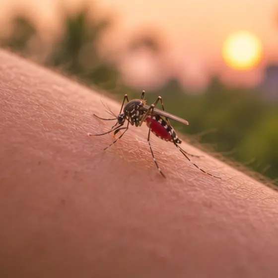

Filariasis (penyakit kaki gajah)
Jangkitan jangka panjang oleh cacing seperti benang yang disebarkan nyamuk, boleh menyebabkan bengkak yang sangat besar
Apa itu
Cacing seperti benang yang dibawa oleh gigitan nyamuk hidup di dalam saluran limfa, dan selepas bertahun-tahun ia boleh menyekat aliran cecair sehingga kaki, lengan atau bahagian badan lain membengkak.
- Saluran dan kelenjar limfa
- Merebak melalui gigitan nyamuk
- Kaki atau lengan makin bengkak
- Jumpa doktor
- Doktor keluarga dahulu; pakar penyakit berjangkit jika perlu
- Biasa pada
- Orang yang tinggal bertahun-tahun di tempat panas yang ada penyakit ini dan banyak nyamuk
- Berjangkit
- Tidak, bukan melalui sentuhan atau udara; merebak melalui gigitan nyamuk yang dijangkiti
- Perjalanan
- Sering tiada tanda bertahun-tahun; bengkak boleh bertambah perlahan, jadi periksa awal penting
Tanda biasa

Selalunya tiada tanda pada awalnyaAsimptomatik 
Kaki dan buku lali bengkakEdema periferi 
DemamDemam 
Kaki berat dan penatKeletihan kaki
Tanda-tanda lain
- Kulit yang tebal, keras dan kasar pada bahagian yang bengkak
Mengapa ia berlaku

Gigitan nyamukBawaan vektor
Punca lain
- Cacing seperti benang (cacing filaria) yang hidup di dalam saluran limfa
- Gigitan nyamuk yang berulang dalam jangka masa panjang di kawasan terjejas meningkatkan peluang dijangkiti
- Cacing boleh merosakkan saluran limfa, jadi cecair terkumpul dan kulit mungkin menebal
- Jangkitan kulit pada anggota yang bengkak boleh menjadikan bengkak lebih teruk dari masa ke masa
Jumpa doktor dahulu jika
- Sakit dada atau sukar bernafas, terutamanya dengan kaki yang tiba-tiba bengkak dan sakit: hubungi 999
- Demam menggigil, keliru atau sangat tidak sihat, dengan anggota yang merah, panas dan bengkak: ke hospital segera
- Sakit atau bengkak tiba-tiba pada buah zakar: ke hospital segera
- Bengkak yang merah, panas dan sakit, atau jalur merah pada kulit: jumpa doktor pada hari yang sama
- Kulit merekah, berluka atau berbau busuk, atau bengkak yang terus membesar
- Bengkak baharu yang perlahan-lahan membesar pada kaki, lengan atau kawasan sulit, atau demam yang berulang
Jika mana-mana berkenaan, sila jumpa doktor sebelum sesi.
Halaman ini ialah maklumat am. Sila terus mengambil ubat biasa anda dan terus berjumpa doktor.
Teruskan mengambil ubat biasa anda dan terus berjumpa doktor. Sesi kami ialah sokongan lembut dan tidak menggantikan rawatan perubatan.
Menjaga diri
- Jumpa doktor awal untuk ujian dan nasihat, walaupun bengkak masih kecil
- Basuh bahagian yang bengkak dengan lembut dengan sabun dan air bersih setiap hari, dan keringkan dengan baik, juga antara jari kaki
- Naikkan kaki atau lengan yang bengkak ketika berehat, dan gerakkannya dengan lembut seperti dinasihatkan doktor
- Bersihkan segera sebarang luka, rekahan atau gigitan pada kulit, dan pakai kasut yang selesa dan melindungi kaki
- Gunakan kelambu dan penghalau nyamuk, serta buang air bertakung di sekitar rumah
Beritahu ahli terapi anda
- Darah beku atau kaki bengkak yang baru
- Kulit luka, merah atau sakit
- Demam atau jangkitan aktif
Ahli terapi anda akan menyemaknya bersama anda sebelum bermula.
Soalan dan jawapan
Apakah Filariasis (penyakit kaki gajah)?
Jangkitan jangka panjang oleh cacing seperti benang yang disebarkan nyamuk, boleh menyebabkan bengkak yang sangat besar. Cacing seperti benang yang dibawa oleh gigitan nyamuk hidup di dalam saluran limfa, dan selepas bertahun-tahun ia boleh menyekat aliran cecair sehingga kaki, lengan atau bahagian badan lain membengkak.
Apakah tanda biasa Filariasis (penyakit kaki gajah)?
Selalunya tiada tanda pada awalnya · Kaki dan buku lali bengkak · Demam · Kaki berat dan penat
Mengapa Filariasis (penyakit kaki gajah) berlaku?
Gigitan nyamuk
Bagaimana menjaga diri dengan Filariasis (penyakit kaki gajah)?
Jumpa doktor awal untuk ujian dan nasihat, walaupun bengkak masih kecil · Basuh bahagian yang bengkak dengan lembut dengan sabun dan air bersih setiap hari, dan keringkan dengan baik, juga antara jari kaki · Naikkan kaki atau lengan yang bengkak ketika berehat, dan gerakkannya dengan lembut seperti dinasihatkan doktor · Bersihkan segera sebarang luka, rekahan atau gigitan pada kulit, dan pakai kasut yang selesa dan melindungi kaki · Gunakan kelambu dan penghalau nyamuk, serta buang air bertakung di sekitar rumah
Bolehkah sesi AI Body Master membantu Filariasis (penyakit kaki gajah)?
Sesi ialah sokongan meridian tanpa jarum yang lembut untuk kesejahteraan anda. Ia tidak merawat atau menyembuhkan Filariasis (penyakit kaki gajah) dan tidak menggantikan ubat atau doktor anda. Beritahu ahli terapi anda sebelum sesi bermula.
Keadaan berkaitan
Rujukan: General information based on public health sources such as Mayo Clinic, NHS, Cleveland Clinic and NCBI StatPearls.
Halaman dikemas kini: 2026-11-01